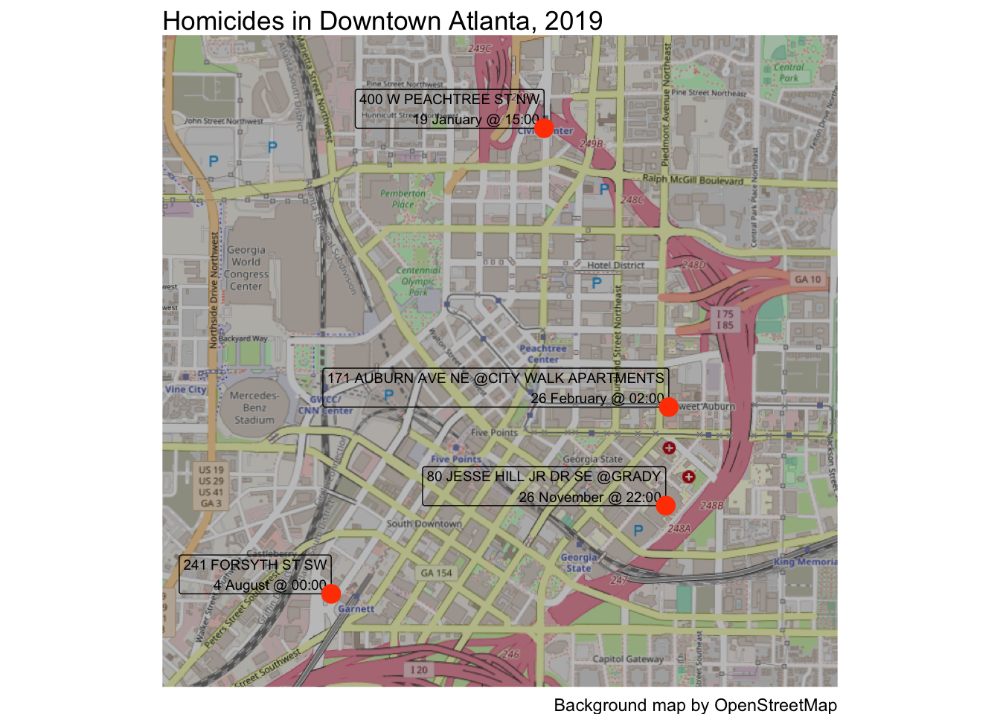

2 Your first crime map
This chapter provides a beginner-friendly introduction to creating crime maps in R. We will walk through the essential steps, including loading pre-prepared crime data, processing it into a usable format, and visualizing it on a map. This chapter introduces key R concepts like working with spatial data and using simple features (SF) objects. You’ll learn to distinguish between temporary and permanent code, understand the basics of coordinate reference systems, and produce a professional-looking map. Let’s get started!
TipBefore you start
Open RStudio or – if you already have RStudio open – click Session then Restart R. Make sure you’re working inside the Crime Mapping RStudio project you created in Section 1.5, then you’re ready to start mapping.
2.1 Introduction
In this chapter we will use R to produce a simple crime map. To do this we will skip over lots of the detail of how R works and what choices we should make in creating maps. We will return to all these details in future sessions, so for-now please don’t worry about understanding every single line of code. Everything will become clear as we work through this book.
The map we’re going to create shows the locations of four homicides in downtown Atlanta in 2019:
2.2 Permanent and temporary R code
To get started, open RStudio. Now click the File menu, then New File and then R Script. A new file will open in the left-hand panel in RStudio. Click File then Save As... to save this file in the project directory you created when you completed the previous chapter. Save the file as chapter_02a.R.
TipWhy are we naming the file
chapter_02a.R?
In each chapter of this book, you will create one or more R script files to store the code needed to produce a map or complete some other task. We will create two separate code files in this chapter, so we will use letters after the chapter number of distinguish between the different files.
Each chapter in this book includes chunks of R code that you can run in RStudio. We can think of this code as falling into two categories. Permanent code is code that we need to run to complete a piece of data analysis. For example, in the next section we will see some permanent code that loads some crime data. We type permanent code in the R script file that we have just created. By the end of this chapter, the script file we have just created will contain all the code needed to make a basic crime map.
As well as permanent code, we sometimes also need to write temporary code. This is code that we don’t need to complete an analytical task, but we do need to write the permanent code that completes a task. For example, we might need to write a piece of code that shows us the name of each column in a dataset, so we can refer to columns by name in our script file. Once we know the names of the columns, we don’t need to code we wrote to find out the column names, which is why we refer to it as temporary code.
Temporary code is not written in our R script file, because including everything in a script file would make it much more complicated and harder to keep track of. Instead, we write temporary code in the R Console.
To help keep track of which code in this book is permanent code and which is temporary code, each chunk of code will either be labelled with the name of the R script file you should add it to, or the word ‘Console’ to indicate that it is temporary code you should type into the R Console.
QuizPermanent and temporary code
What is the difference between permanent and temporary code?
Why are temporary code written in the R Console instead of a script file?
2.3 Loading crime data
2.3.1 Loading packages
Before we can work with our data, we first load packages of functions for use in the analysis. For example, we will load the tidyverse package, which automatically loads several packages that are useful for data wrangling and analysis.
Copy the code below and paste it into the blank file chapter_02a.R that you created earlier. This adds these lines of code to your script, but you need to run that code for it to do anything. To run these three lines of code, you should highlight the lines of code you want to run and then either:
- click the
Runbutton at the top of the R script panel, or - press
Ctrl+Enter(Windows) orCommand+Return(Mac) on your keyboard.
TipWhat are the
Command, Ctrl, Enter or Return keys?
The Enter or Return key on your keyboard may be marked ⏎. On Mac keyboards, the Command key is sometimes marked ⌘.
If you just want to run one line of code, you don’t need to highlight the whole line to run it. Just place the cursor anywhere on that line, then either click the Run button or press Ctrl+Enter/Command+Return.
Highlight all three lines of code and press Run. You will see that nothing happens in the R script, but several messages appear in the R Console. You will also see that the three lines of code have been copied into the Console just above those messages. This means you can use the R Console as a record of all the code you have run in RStudio.
WarningPackage loading messages
Loading packages will sometimes produce various messages. For now, you can safely ignore these messages. It is not always safe to ignore R messages – we will cover how you should deal with messages, warnings and errors in a later chapter.
TipWhat do these messages mean?
For now you don’t need to worry about these messages, but if you really want to know what they mean …
Some R packages make use of other apps and utilities on your computer. For example, the sf package makes use of a piece of software call GDAL that is used for managing spatial data. So that you know which version of GDAL is being used, sf prints a message telling you.
The tidyverse package itself loads several packages that are commonly used together for analysing data. When you load tidyverse, it will print a message telling you which packages it has loaded, along with the version number for each package. It also prints a message saying if any functions from the tidyverse packages have replaced (“masked”) any functions from packages that were previously loaded.
In general, R packages use start-up messages to remind you of information that is not likely to be critical to your work, but which it might be useful to know at some point in the future.
QuizLoading packages
How do you run a line of code in RStudio for Windows without highlighting the whole line?
Which package do we load to simultaneously load common packages used for data wrangling and analysis?
2.3.2 Loading data
The first task in creating any crime map is to obtain the crime and other data necessary. In many cases preparing the data for analysis and mapping will be a substantial task, but in this case we are going to use some pre-prepared crime data together with a pre-drawn street map (which we will ask R to download automatically when it draws the final map).
The data we will use will be records of homicides in the Downtown neighbourhood of Atlanta, Georgia, in 2019. We can load the homicide data using the read_csv() function. A function in R is a piece of code that performs an action. You can think of functions as being like verbs (i.e. ‘doing words’), which is why the names of functions are often verbs such as filter(), select(), etc. The read_csv() function loads data from a file and prints a message showing the name of each column in the data and the type of data (number, text etc.) in each column. Again, you can ignore this message for now.
ImportantMultiple functions with similar names
Sometimes R has several functions that have similar names but do different things. That means it is very important to pay attention to which function you need in any particular set of circumstances. In this case we are using the read_csv() function, which does a slightly different thing from the similarly named read.csv() function (note the . instead of the _). It is usually better to use read_csv() because it produces a type of object (called a tibble) that is easier to work with than the object (called a data frame) that is produced by read.csv(). For that reason, we will always use read_csv() in this course.
Copy these lines of code into your R script file, then run the line containing the read_csv() function by clicking anywhere on that line and pressing Ctrl+Enter (Windows) or Command+Return (Mac) on your keyboard.
chapter_02a.R
Rows: 4 Columns: 4
── Column specification ────────────────────────────────────────────────────────
Delimiter: ","
chr (1): label
dbl (3): report_number, longitude, latitude
ℹ Use `spec()` to retrieve the full column specification for this data.
ℹ Specify the column types or set `show_col_types = FALSE` to quiet this message.
TipWhat does this output mean?
When read_csv() loads data from a file, it produces a short summary of the data and prints that in the R Console. Looking at this message, you can see that the data contains 4 rows and 4 columns of values in each row. You can also see the names of the columns: ‘report_number’, ‘label’, ‘longitude’ and ‘latitude’.
We have stored the results of the read_csv() function in an R object called homicides. An object in R is anything that stores any type of data. There are many types of objects, but for this chapter we don’t need to explore these in any more detail. All you need to remember for now is that objects store data (which is why their names are often nouns) and functions do things.
2.3.3 Viewing the data
To check the data has been loaded correctly, we can view the loaded data using the head() function. By default, head() prints the first six rows of the data stored in an object. Copy this code into the R Console and press Enter or Return on your keyboard.
# A tibble: 4 × 4
report_number label longitude latitude
<dbl> <chr> <dbl> <dbl>
1 190191530 "400 W PEACHTREE ST NW\n19 January @ 15:00" -84.4 33.8
2 190570315 "171 AUBURN AVE NE @CITY WALK APARTMENTS\n26… -84.4 33.8
3 192160018 "241 FORSYTH ST SW\n 4 August @ 00:00" -84.4 33.7
4 193302338 "80 JESSE HILL JR DR SE @GRADY\n26 November … -84.4 33.8The data contain four columns: a unique identifier for a homicide, a label describing when and where that homicide occurred, and the longitude and latitude of the homicide location. We can use this data to plot the homicides on a map.
ImportantQuoted and unquoted values
In the code head(homicides), there are no quote marks around the word homicides.
Almost all programming languages will interpret words differently depending on whether they have quotes around them or not. In this case, if you type the code head(homicides) then R will print the first few rows of the data stored in the homicides object.
On the other hand, if you type the code head("homicides") or head('homicides'), R will interpret this as an instruction to print the first few elements of the literal text ‘homicides’. Since the text ‘homicides’ contains only one element (more about that later), head("homicides") will just print the word ‘homicides’.
QuizLoading data
Why is the read_csv() function preferred over read.csv() in this chapter?
What is the output of the following R code: head(homicides)?
2.4 Processing the data
Before we can plot the data on a map, we have to complete some pre-processing steps. Having to process data before being able to analyse or visualise it is common in all types of data analysis, but spatial analysis often involves additional processing that takes account of the special features of spatial data.
2.4.1 Converting the data into a spatial format
Two data-processing tasks are needed to produce this map. The first is to convert the data into a simple features or SF object, which is a special type of R object that can be used by functions that process spatial data. We will cover the details of the st_as_sf() function that converts our data into into an SF object later on.
Copy this code into the chapter_02a.R file, then select these lines of code and click the Run button or press Ctrl+Enter/Command+Return.
When you run this code, it looks like nothing happened. This is because the results of the code are stored in the homicides_sf object. We can check the contents of homicides_sf in the R Console as before:
Simple feature collection with 4 features and 2 fields
Geometry type: POINT
Dimension: XY
Bounding box: xmin: -84.39732 ymin: 33.74827 xmax: -84.38185 ymax: 33.76614
Geodetic CRS: WGS 84
# A tibble: 4 × 3
report_number label geometry
<dbl> <chr> <POINT [°]>
1 190191530 "400 W PEACHTREE ST NW\n19 January @ … (-84.3876 33.76614)
2 190570315 "171 AUBURN AVE NE @CITY WALK APARTME… (-84.38185 33.75546)
3 192160018 "241 FORSYTH ST SW\n 4 August @ 00:00" (-84.39732 33.74827)
4 193302338 "80 JESSE HILL JR DR SE @GRADY\n26 No… (-84.38198 33.75168)The data looks identical to before running the function st_as_sf(), except that the two columns called longitude and latitude have disappeared and there is now an extra column called geometry. The geometry column is important because lots of functions in R can recognise that the geometry column represents a location on the surface of the Earth that can be used to analyse and map data in space.
2.4.2 Changing the data projection
The geometry column in the homicides_sf object represents locations on the surface of the earth using co-ordinates (pairs of numbers). In this case, the co-ordinates are expressed as longitudes and latitudes, but there are lots of other types of co-ordinates (known as co-ordinate reference systems).
We’ll learn more about co-ordinate reference systems in Chapter 4, but for now it’s enough to know that each different system has advantages and disadvantages. To make the homicide locations easier to add to a map, we are going to first transform the co-ordinates from longitudes and latitudes to a co-ordinate reference system that is specifically designed for mapping data for the US state of Georgia.
To do this, we will use the st_transform() function, together with a code representing the co-ordinate reference system we want to use (you don’t need to understand this code at this stage). Copy this code into the chapter_02a.R file, click anywhere on the new line of code and press the Run button or press Ctrl+Enter/Command+Return.
Once again, we can check what the result looks like in the R Console.
Simple feature collection with 4 features and 2 fields
Geometry type: POINT
Dimension: XY
Bounding box: xmin: 678630.6 ymin: 415608.5 xmax: 680065.5 ymax: 417588.4
Projected CRS: NAD83 / Georgia West
# A tibble: 4 × 3
report_number label geometry
<dbl> <chr> <POINT [m]>
1 190191530 "400 W PEACHTREE ST NW\n19 January @ … (679535.4 417588.4)
2 190570315 "171 AUBURN AVE NE @CITY WALK APARTME… (680065.5 416402.8)
3 192160018 "241 FORSYTH ST SW\n 4 August @ 00:00" (678630.6 415608.5)
4 193302338 "80 JESSE HILL JR DR SE @GRADY\n26 No… (680052.6 415983.6)The data looks almost identical, except that the values in the geometry column have changed (you don’t need to understand yet the details of how these numbers are different). Now that we’ve completed the data processing, we can go on to produce the map itself.
2.5 Checking our progress
At the moment, the file chapter_02a.R that you have created should look like this:
chapter_02a.R
# Load the R packages we need to analyse this data
pacman::p_load(ggspatial, sf, tidyverse)
# Download the data directly from a URL and store it as an object
homicides <- read_csv("https://mpjashby.github.io/crimemappingdata/downtown_homicides.csv")
# Convert the data to a simple features object, which we can use in functions
# that work on spatial data
homicides_sf <- st_as_sf(
homicides,
coords = c("longitude", "latitude"),
crs = "EPSG:4326"
)
# Transform the data co-ordinate reference system
homicides_sf_trans <- st_transform(homicides_sf, "EPSG:26967")Note how this code tells a clear story about exactly what you have done. This code is easier to understand because:
- we have left blank lines between each piece of code so that it’s easy to see each separate task that is being completed, and
- we have used comments (lines of code starting with
#) to explain what each step does.
Before going any further, let’s check all of our code has been run successfully. To do this, find the Environment panel in RStudio: if you followed the instructions on setting up RStudio in ?sec-adjust-rstudio, you should see Environment below your R script file. Click ‘Environment’ and RStudio will show you a list of all the objects that you have created since the start of your R session. You should see three objects listed:
homicides, which should have 4 observations (i.e. rows) of 4 variables (i.e. columns)homicides_sf, which should have 4 observations of 3 variableshomicides_sf_trans, which should have 4 observations of 3 variables
If any of those objects are missing from the list of objects in the Environment panel, you might have forgotten to run the code after pasting it into your script file. If so, you can run that part of the code now by selecting the relevant lines of code and pressing the Run button in RStudio or Ctrl+Enter/Command+Return on your keyboard.
QuizProcessing the data
What does the st_as_sf() function do?
Why is it important to use comments in your R script?
2.6 Drawing the map
We are now ready to produce our map of homicides in downtown Atlanta. So that people viewing the map will understand where the homicides occurred, we will plot the homicides on top of a base map showing streets, parks and other geographic features obtained from an online web mapping service.
The code needed to produce the map looks quite complicated, but we don’t need to understand it all at this point – we will go through this code in Chapter 4. For now, copy the code into the chapter_02a.R file, put the cursor somewhere on the line that includes the function ggplot(), then click the Run button or Ctrl+Enter/Command+Return on your keyboard.
chapter_02a.R
# Create the map
ggplot(homicides_sf_trans) +
annotation_map_tile(type = "osm", zoomin = 0, progress = "none") +
geom_sf_label(aes(label = label), hjust = 1, size = 2.5, vjust = 0) +
geom_sf(colour = "orangered1", size = 4) +
scale_x_continuous(expand = expansion(mult = 0.5)) +
scale_y_continuous(expand = expansion(mult = 0.2)) +
labs(
title = "Homicides in Downtown Atlanta, 2019",
caption = "Background map by OpenStreetMap"
) +
theme_void()Loading required namespace: raster
You can change the appearance of the map by changing various parts of the code above. For example, you could change the colour of the points that mark the homicides by changing the code colour = "orangered1" to colour = "mediumblue", or change the base map to a different style by changing the code type = "osm" to type = "cartolight". Try some of these out – after you make each change, press the Run button in RStudio or Ctrl+Enter/Command+Return on your keyboard to see how the map changes.
2.7 Putting the code together
Now we have walked through the different parts of the code, we can create a map from scratch in a single block of code. In this example, we will map homicides from in Glenrose Heights neighbourhood of Atlanta, and a different style of base map. Since the area covered by the map is derived from the data itself, the extent of the map will update automatically.
Create a new script file in RStudio by clicking File, New File then R Script. Paste the following code into this new file, then save the file as chapter_02b.R.
chapter_02b.R
# Load the R packages we need to analyse this data
pacman::p_load(ggspatial, sf, tidyverse)
# Download the data directly from a URL and store it as an object
homicides <- read_csv("https://mpjashby.github.io/crimemappingdata/glenrose_heights_homicides.csv")
# Convert the data to a simple features object, which we can use in functions
# that work on spatial data
homicides_sf <- st_as_sf(
homicides,
coords = c("longitude", "latitude"),
crs = "EPSG:4326"
)
# Transform the data to a co-ordinate reference system for the state of Georgia
homicides_sf_trans <- st_transform(homicides_sf, "EPSG:26967")
# Plot the map
ggplot(homicides_sf_trans) +
annotation_map_tile(type = "osm", zoomin = 0, progress = "none") +
geom_sf_label(aes(label = label), hjust = 1, size = 2.5, vjust = 0) +
geom_sf(colour = "mediumblue", size = 4) +
scale_x_continuous(expand = expansion(mult = 1.5)) +
scale_y_continuous(expand = expansion(mult = 0.2)) +
labs(
title = "Homicides in Glenrose Heights, 2019",
caption = "Background map by OpenStreetMap"
) +
theme_void()Rows: 4 Columns: 4
── Column specification ────────────────────────────────────────────────────────
Delimiter: ","
chr (1): label
dbl (3): report_number, longitude, latitude
ℹ Use `spec()` to retrieve the full column specification for this data.
ℹ Specify the column types or set `show_col_types = FALSE` to quiet this message.
When we want to run all the code in a file, it would be tedious to run each chunk of code separately. Instead, we can run all the code in a file in one go by:
- clicking the tiny downward arrow next to the
Sourcebutton in the script panel in RStudio (to the right of theRunbutton) then clickingSource with Echo, or - clicking anywhere in our code and pressing
Shift+Ctrl+Enter(Windows) orShift+Command+Return(Mac) on the computer keyboard.
This runs all the code in our script in one go. You should see some messages appear in the R Console, and the final map appear in the RStudio Plots panel.
Save the chapter_02b.R file by hitting Ctrl+S on Windows or Command+S on Mac, then restart R to start a new session by clicking on the Session menu and then clicking Restart R. This creates a blank canvas for the next chapter.
2.8 In summary
Well done – you have created your first map!
You may not have understood every line of code in this chapter, but we will cover them all in more detail over the rest of this course. By the end of this course, you will be able to write code like this to create many different types of crime map.
In this chapter you have learned how to load data into R, prepare it for use in making a map and then used it to make your first crime map of this course.
The map we have produced in this chapter is effective for showing the locations of just a few crimes, but is too limited to show more complicated patterns or larger datasets. In the following chapter, we will learn how to produce more sophisticated maps and spatial analysis. We will also learn how each of the functions that we have used in this chapter work.
QuizRevision questions
Answer these questions to check you have understood the main points covered in this chapter. Write between 50 and 100 words to answer each question.
- Why is it important to differentiate between temporary and permanent code when working in R? Provide an example of each and explain how they are used in creating a crime map.
- Explain why it is useful to store spatial data as a simple features (SF) object. What steps are required to convert crime data into an SF object, and why is this conversion necessary?
- What are coordinate reference systems (CRS), and why might you need to transform the CRS of spatial data? Describe how this was applied in the chapter to map homicides in Atlanta.
- What steps are involved in creating a crime map in R from loading data to visualizing it? Highlight the key functions used and the purpose of each in the process.